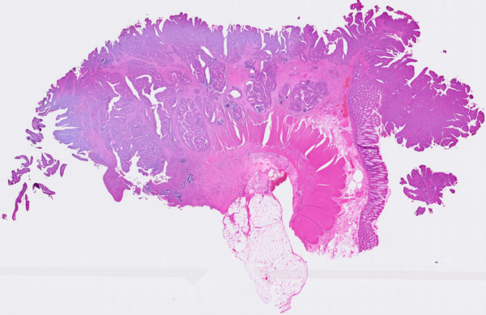
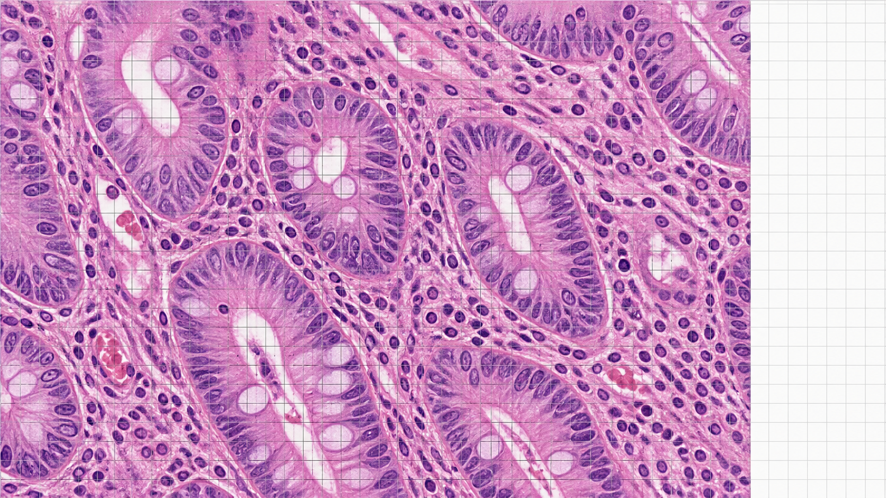
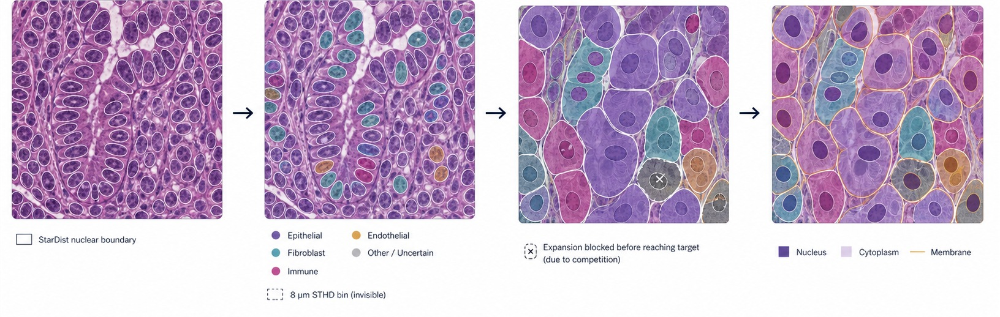
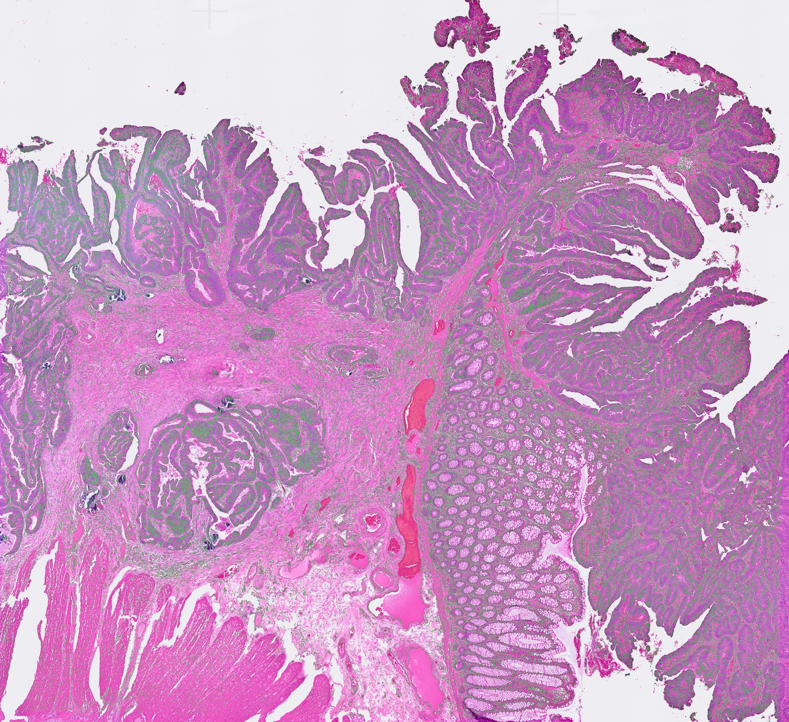
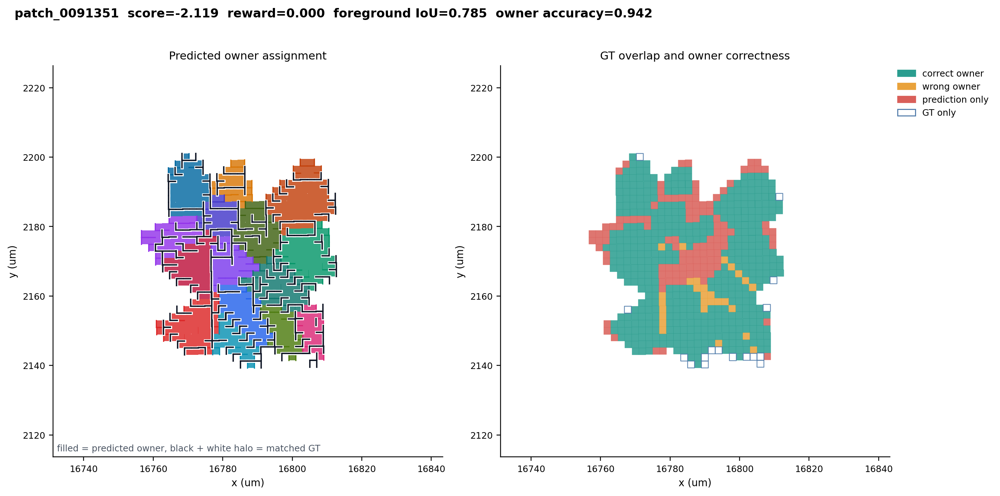

2 µmvs 55 µm
Finer than regular Visium
Small squares preserve crowded boundaries that one conventional spot would mix.

Progress report · August 2026

Small squares preserve crowded boundaries that one conventional spot would mix.
This project keeps transcriptome-scale discovery rather than preselecting only a targeted panel.
Unlike dissociated scRNA-seq, every expression vector remains registered to tissue morphology.
10x Genomics: Visium HD uses a continuous lawn of 2 × 2 µm barcoded squares; regular Visium uses 55 µm spots; Xenium Prime uses targeted 5K panels. The microscopic field is a scale-aware schematic.
Space Ranger outputs native 2 µm plus 8 and 16 µm bins; 10x reports ~16× more transcripts in an 8 µm bin than a 2 µm square and cautions about scale effects.
Target objectA unique physical barcode owner for the final segmentation, while uncertainty is retained during inference.
Low-count bins weaken evidence.
Diffusion and spillover move RNA.
Several cells project into one plane.
Nucleus-centered growth is approximate.
Ishaque et al., “The Challenge of Cell Segmentation in Spatially Resolved Transcriptomics,” arXiv:2606.09675 (2026).


The nuclear mask becomes the immutable physical seed for every later step.
No single value is a threshold. The example at left is an observed posterior vector from the current dataset.
A fibroblast and a lymphocyte with similar nuclei should not be expanded to the same size.
These are reproducible benchmark priors—not universal biological constants.
 same cell-level field
same cell-level field same cell-level field
same cell-level fieldThe simulator records “blocked” cells instead of silently expanding through their neighbors.
Cell A6 / 9
Cell B3 / 9
Current limitation: generator and inference reference still share a parent cohort; donor-independent splitting is required for the next realism-matched benchmark.
Observed output split
Why this mattersEvery molecule has a known source cell, but inference receives only the re-aggregated 2 µm count matrix and nuclei.
A square can cover more than one true mask.
RL stays discrete and globally unique.
Generalized EM / alternating probabilistic soft assignment—not claimed as an exact finite-mixture maximum-likelihood model.
A → B0.61
A → C0.27
STOP0.12
Exact weights shown for the preserved w5 overfit run. EM probability is not added to reward; w1 and overlap were disabled in this checkpoint.
Preserved run: colorectal_nucleus_based_patch_overfit4_w5_validated_20260825T114854Z.
Readout: EM adds substantial value. The current frozen policy does not improve it.
Only 20.7% of policy choices were the highest-global-delta action.
At entropy threshold 0.5, all 875 scored non-nuclear bins were eligible. The ambiguity gate was effectively open everywhere.

195.1 selected-gene UMI/bin in simulation vs 37.9 in real tissue.
Expression evidence is artificially clean.Mean Spearman to each cell’s exact scDesign3 source profile.
Generator and reference share a parent cohort.Nucleus-centered radial growth with oracle area already scores highly.
The GT favors expansion-style geometry.This is a useful engineering benchmark for multi-owner logic and integration. It is not a credible estimate of real colorectal accuracy.
Match real capture depth; add structured ambient and boundary noise.
Separate generator and inference by donor or cohort.
Accuracy, runtime, memory, failures, and robustness.
Entropy threshold and REPLACE reward attribution.
Only after validation passes audit.
Current statusThe assignment architecture works; the next milestone is trustworthy evidence that RL adds value beyond EM.